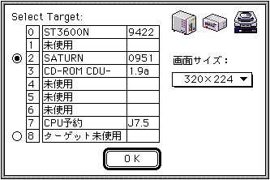

★Graphic Tools Guide
★3Dエディタユーザーズマニュアル
★Graphic Tools Guide
★3Dエディタユーザーズマニュアル
■
｜
進む▼
3Dエディタユーザーズマニュアル
1.はじめに
■概 要
- 『3D Editor』は『SEGA 3D』フォーマット、および、『DXF』フォーマットの3Dデータファイルを開き、
保存されている3D立体画像を任意の方向から参照することができます。
そして、これらに含まれているポリゴン面にテクスチャを張り付けたり、色を付けたりして、『SEGA 3D』フォーマットに保存できます。
■制限事項
- ●接続ターゲット
- Version 1.71J(1.72J)は、以下のセガ開発ターゲットに対応しています。
- セガサターンターゲットModel-S グラフィックスボックス
- セガサターン カートリッジ デベロップメントシステム(通称、CartDev「カートデブ」)
- 接続の際の注意事項は、各ターゲット付属のマニュアル等を参照してください。
- ●Power PC対応
- 「3D Editor」をPower Macintoshで起動した場合、ネイティブモードで動作します。
■基本操作
- アプリケーションを起動すると、以下の画面が表示されます。
接続したいターゲットボックスを選択して、「O K」をクリックします。
また、必要に応じてTV画面のサイズを変更することができます。

■入力ファイルについて
- 『SEGA 3D』、『DXF』フォーマットは、ともにテキスト形式のファイルですが、
『3D Editer』のオープンダイアログでは、他のテキストファイルを省き、
これらのフォーマットのファイル名のみをリストアップします。
■
｜
進む▼
★Graphic Tools Guide
★3Dエディタユーザーズマニュアル
Copyright SEGA ENTERPRISES, LTD., 1997